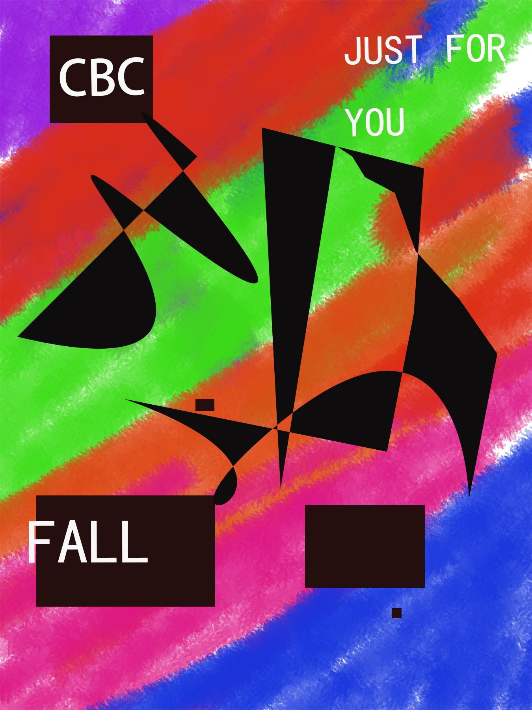

Works
制图与视觉作品索引。每个条目链接至详情页，可获取矢量图与 PDF 源文件。
作品

片区手绘地图，SVG 与 PDF 两种格式。

校园快递点位置示意图。

校区地图与课程汇报归档。

合作与投稿作品。
研究与课程设计
-
基于 51 单片机与 12MHz 晶振的时钟电路，含 Proteus 仿真与 C 源码。
-
测量范围 1Hz–10KHz，LCD 显示波形与频率。
-
监测点数据清洗、相关性分析与可视化，基于 pandas 与 matplotlib。
-
信号滤波、滑动窗口切分与分类模型训练结果。